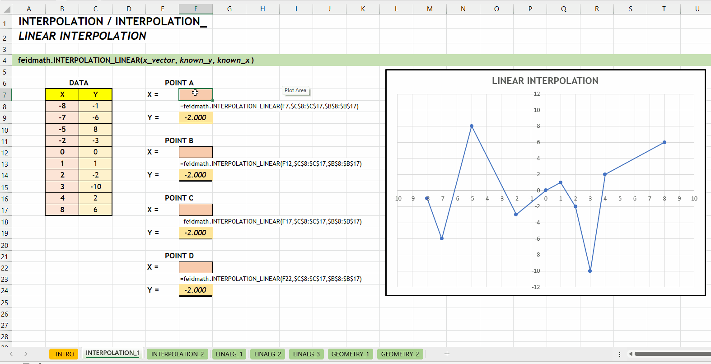
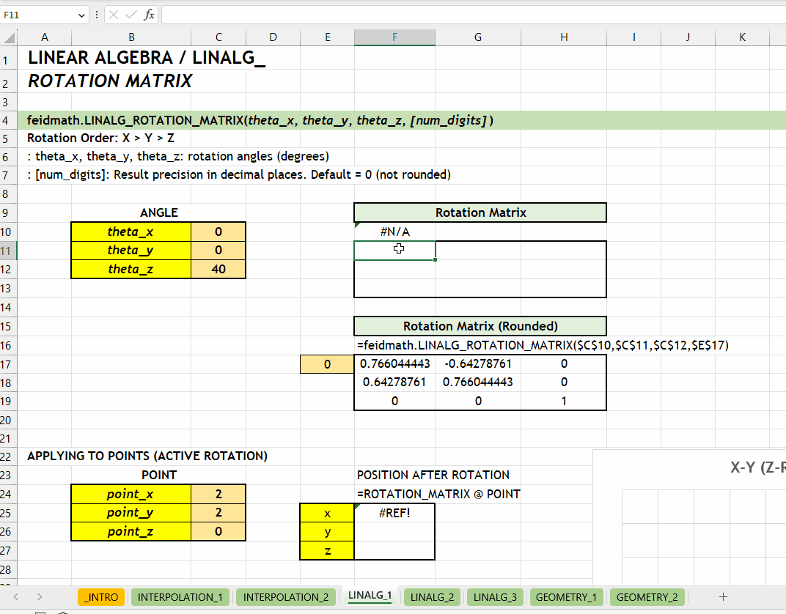
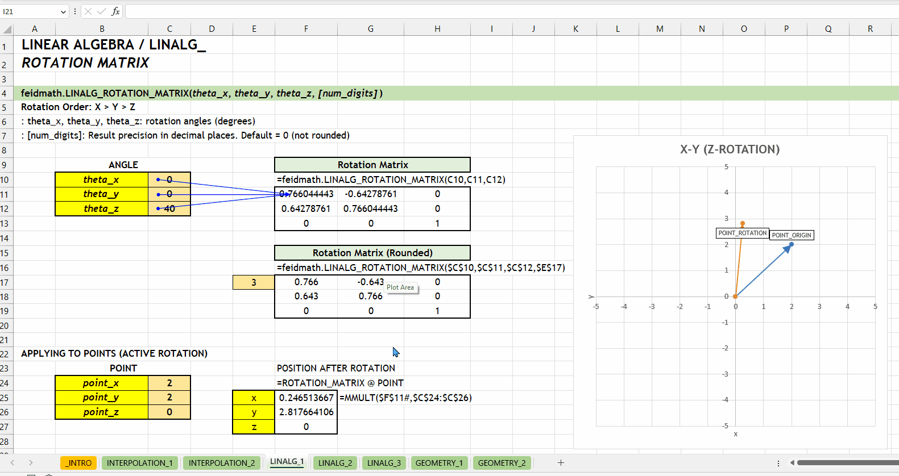
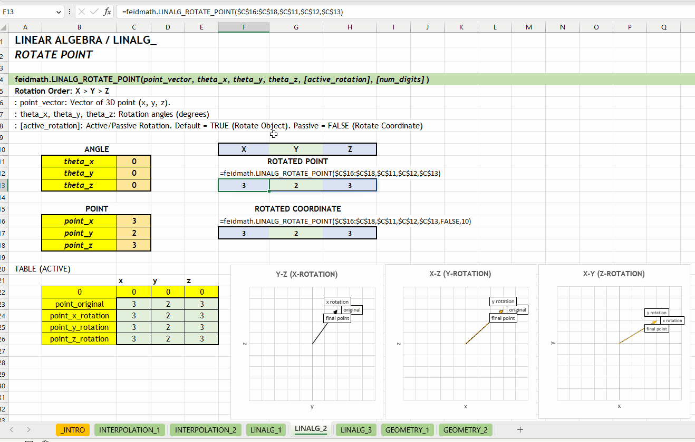
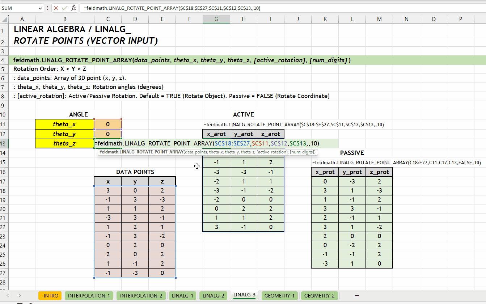
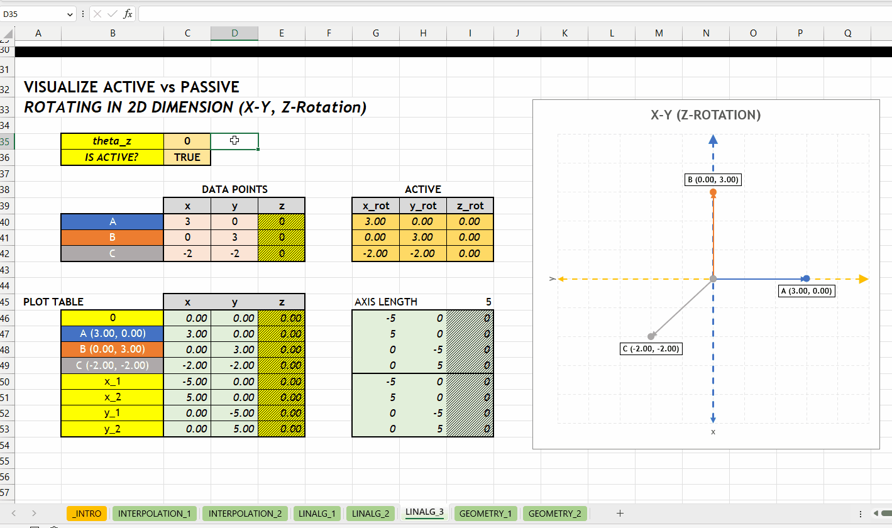
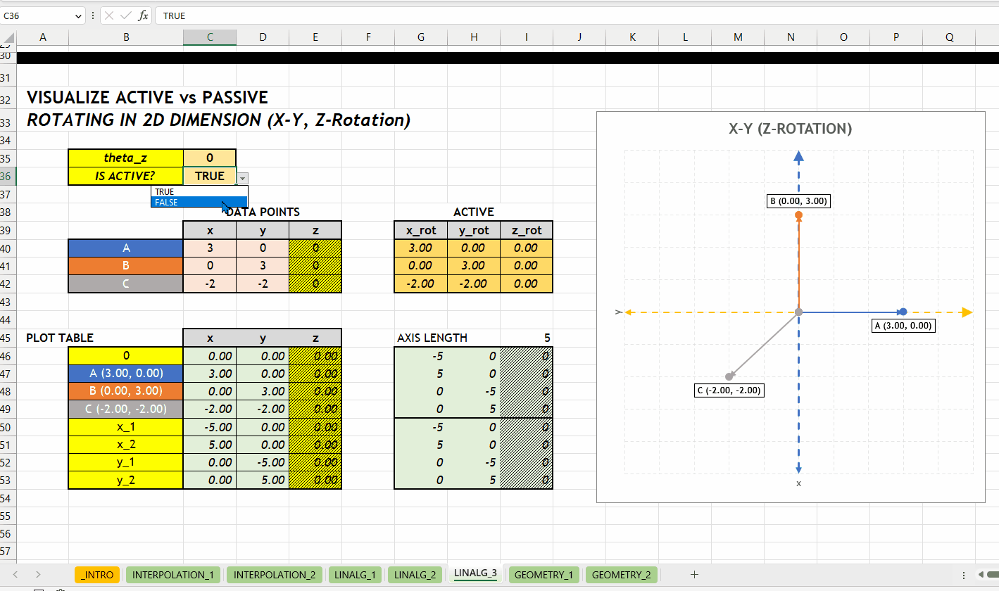
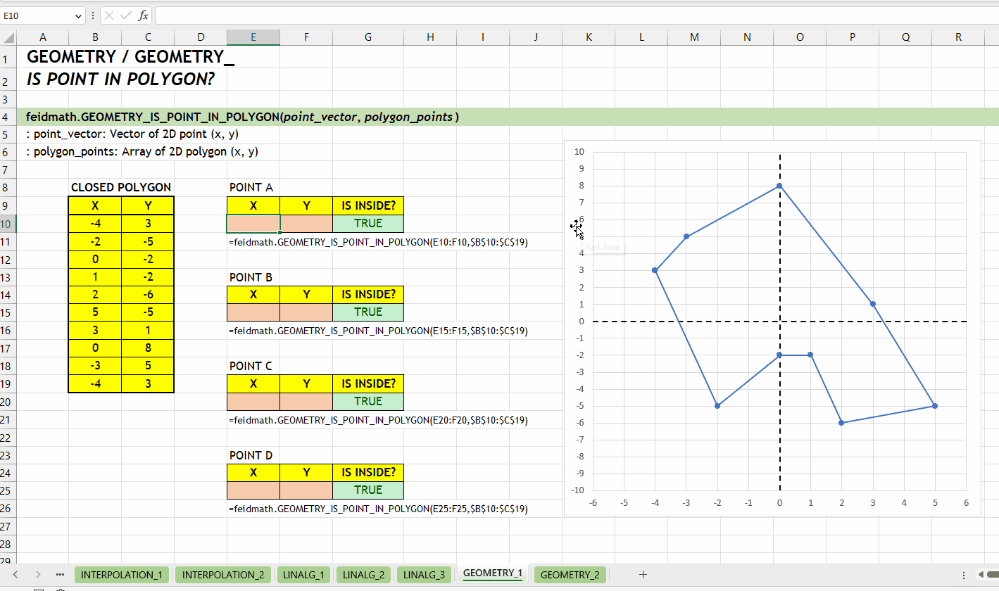
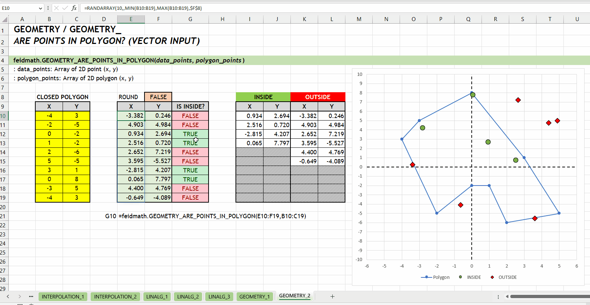

%%{ init: { 'theme': 'forest' } }%%
flowchart LR
NONE ---> _INTERPOLATION_LINEAR
_INTERPOLATION_LINEAR ---> INTERPOLATION_LINEAR
INTERPOLATION_*feidmath v0.1
Koleksi LAMBDA feidmath v0.1
feidlambda-math atau feidmath merupakan kumpulan fungsi LAMBDA yang fokus menyelesaikan beberapa permasalahan matematis seperti perkalian matriks, rotasi, interpolasi, dlsbnya. Pengembangan feidmath diusahakan tidak memerlukan fungsi dari feidlambda sehingga fungsi yang tersedia feidmath terisolasi dan dapat digunakan secara langsung sesuai kebutuhan. feidmath dibuat untuk fokus pengembangan yang bersifat penerapan dengan fungsi matematika. feidmath merupakan langkah awal untuk pengembangan koleksi LAMBDA lainnya yang bersifat terapan.
feidmath v0.1 di rilis bersamaan dengan feidlambda v0.4.
Mengikuti panduan FIAKO LAMBDA Style Guide dan feidlambda v0.4, feidmath dipisahkan dengan kategori yang sesuai dengan fungsi yang tersedia. Berikut kategori yang tersedia di feidmath v0.1.x:
INTERPOLATION_*: Kategori ini berisi fungsi untuk estimasi nilai berdasarkan data yang sudah diketahui.LINALG_*: Ini mencakup fungsi-fungsi yang berkaitan dengan aljabar linear, seperti operasi pada vektor dan matriksGEOMETRY_*: Kategori ini melibatkan fungsi geometri, termasuk mengidentifikasi titik berada di dalam/luar poligon.Download excel demonstrasi RELEASE_feidmath_v0_1_0.xlsx, untuk memudahkan mengeksplorasi fungsi baru di feidmath v0.1.x.
INTERPOLATION_*NEW v0.1 Kategori INTERPOLATION_* merupakan kumpulan fungsi untuk mengestimasi nilai berdasarkan data yang sudah diketahui. Hubungan antar fungsi di kategori ini bisa dilihat di Gambar 2.1.
%%{ init: { 'theme': 'forest' } }%%
flowchart LR
NONE ---> _INTERPOLATION_LINEAR
_INTERPOLATION_LINEAR ---> INTERPOLATION_LINEAR
INTERPOLATION_*Fungsi utama kategori INTERPOLATION_* yaitu INTERPOLATION_LINEAR().
INTERPOLATION_*
// NONE ---> _INTERPOLATION_LINEAR
_INTERPOLATION_LINEAR = LAMBDA(x, known_ys, known_xs,
LET(
known_xs, TOCOL(known_xs),
known_ys, TOCOL(known_ys),
nrow, ROWS(known_ys),
known_table, HSTACK(known_xs, known_ys),
sorted_table, SORT(known_table, 1),
sorted_xs, CHOOSECOLS(sorted_table, 1),
sorted_ys, CHOOSECOLS(sorted_table, 2),
nearest_x, IFS(
x > MAX(sorted_xs),
XMATCH(x, sorted_xs, -1),
x < MIN(sorted_xs),
XMATCH(x, sorted_xs, 1),
TRUE,
XMATCH(x, sorted_xs, -1)
),
index_ys, IF(
nearest_x < nrow,
VSTACK(nearest_x, nearest_x + 1),
VSTACK(nearest_x - 1, nearest_x)
),
select_ys, CHOOSEROWS(sorted_ys, index_ys),
select_xs, CHOOSEROWS(sorted_xs, index_ys),
FORECAST.LINEAR(x, select_ys, select_xs)
)
);
// _INTERPOLATION_LINEAR ---> INTERPOLATION_LINEAR
INTERPOLATION_LINEAR = LAMBDA(x_vector, known_ys, known_xs,
LET(
x_vector, TOCOL(x_vector),
y_vector, BYROW(
x_vector,
LAMBDA(x, _INTERPOLATION_LINEAR(x, known_ys, known_xs))
),
y_vector
)
);INTERPOLATION_LINEAR()Fungsi INTERPOLATION_LINEAR(x_vector, known_y, known_x) digunakan untuk mencari nilai interpolasi linear. Fungsi ini dikembangkan menggunakan fungsi bawaan FORECAST.LINEAR(...). Fungsi ini bisa menerima input scalar maupun vector.
x_vector := [scalar | vector]known_ys := [vector]known_xs := [vector]

INTERPOLATION_LINEAR()LINALG_*NEW v0.1 Kategori LINALG_* merupakan kumpulan fungsi yang berkaitan dengan aljabar linear seperti operasi pada vektor atau matriks. LINALG merupakan singkatan dari LINEAR ALGEBRA. Hubungan antar fungsi di kategori ini bisa dilihat di Gambar 3.1.
%%{ init: { 'theme': 'forest' } }%%
flowchart LR
NONE ---> LINALG_ROTATION_MATRIX
LINALG_ROTATION_MATRIX ---> LINALG_ROTATE_POINT
LINALG_ROTATE_POINT ---> _RECURSIVE_ROTATE_POINTS
_RECURSIVE_ROTATE_POINTS ---> _RECURSIVE_ROTATE_POINTS
_RECURSIVE_ROTATE_POINTS ---> LINALG_ROTATE_POINT_ARRAY
LINALG_*Fungsi utama kategori LINALG_* yaitu LINALG_ROTATION_MATRIX(), LINALG_ROTATE_POINT(), dan LINALG_ROTATE_POINT_ARRAY().
LINALG_*
// NONE ---> LINALG_ROTATION_MATRIX
LINALG_ROTATION_MATRIX = LAMBDA(theta_x, theta_y, theta_z, [num_digits],
LET(
round_number, IF(ISOMITTED(num_digits), 0, num_digits),
angle_x, RADIANS(theta_x),
angle_y, RADIANS(theta_y),
angle_z, RADIANS(theta_z),
cos_x, COS(angle_x),
sin_x, SIN(angle_x),
rotation_x, VSTACK(
HSTACK(1, 0, 0),
HSTACK(0, cos_x, -sin_x),
HSTACK(0, sin_x, cos_x)
),
cos_y, COS(angle_y),
sin_y, SIN(angle_y),
rotation_y, VSTACK(
HSTACK(cos_y, 0, sin_y),
HSTACK(0, 1, 0),
HSTACK(-sin_y, 0, cos_y)
),
cos_z, COS(angle_z),
sin_z, SIN(angle_z),
rotation_z, VSTACK(
HSTACK(cos_z, -sin_z, 0),
HSTACK(sin_z, cos_z, 0),
HSTACK(0, 0, 1)
),
rotation_matrix, MMULT(rotation_z, MMULT(rotation_y, rotation_x)),
IF(
round_number,
ROUND(rotation_matrix, round_number),
rotation_matrix
)
)
);
// LINALG_ROTATION_MATRIX ---> LINALG_ROTATE_POINT
LINALG_ROTATE_POINT = LAMBDA(
point_vector,
theta_x,
theta_y,
theta_z,
[active_rotation],
[num_digits],
LET(
active_rotation, IF(
ISOMITTED(active_rotation),
TRUE,
active_rotation
),
rotation_matrix, LINALG_ROTATION_MATRIX(
theta_x,
theta_y,
theta_z,
num_digits
),
point_vector, TOCOL(point_vector),
final_rotation, IF(
active_rotation,
rotation_matrix,
TRANSPOSE(rotation_matrix)
),
point_rotation, MMULT(final_rotation, point_vector),
TOROW(point_rotation)
)
);
// LINALG_ROTATE_POINT ---> _RECURSIVE_ROTATE_POINTS
// _RECURSIVE_ROTATE_POINTS ---> _RECURSIVE_ROTATE_POINTS
_RECURSIVE_ROTATE_POINTS = LAMBDA(
ntry,
data_points,
theta_x,
theta_y,
theta_z,
[active_rotation],
[num_digits],
LET(
selected_row, CHOOSEROWS(data_points, ntry),
IF(
ntry = 1,
LINALG_ROTATE_POINT(
selected_row,
theta_x,
theta_y,
theta_z,
active_rotation,
num_digits
),
LET(
next_try, ntry - 1,
result, LINALG_ROTATE_POINT(
selected_row,
theta_x,
theta_y,
theta_z,
active_rotation,
num_digits
),
VSTACK(
_RECURSIVE_ROTATE_POINTS(
next_try,
data_points,
theta_x,
theta_y,
theta_z,
active_rotation,
num_digits
),
result
)
)
)
)
);
// _RECURSIVE_ROTATE_POINTS ---> LINALG_ROTATE_POINT_ARRAY
LINALG_ROTATE_POINT_ARRAY = LAMBDA(
data_points,
theta_x,
theta_y,
theta_z,
[active_rotation],
[num_digits],
_RECURSIVE_ROTATE_POINTS(
ROWS(data_points),
data_points,
theta_x,
theta_y,
theta_z,
active_rotation,
num_digits
)
);LINALG_ROTATION_MATRIX()Fungsi LINALG_ROTATION_MATRIX(theta_x, theta_y, theta_z, [num_digits]) digunakan untuk menghasilkan matriks rotasi berdasarkan tiga sudut rotasi (\(\theta_x\), \(\theta_y\), dan \(\theta_z\)) yang ditentukan dalam derajat.
theta_x | theta_y | theta_z := [number][num_digits] := 0 :: [number]0 (tidak dibulatkan). Jumlah digit presisi yang diinginkan.


LINALG_ROTATION_MATRIX()LINALG_ROTATE_POINT()Fungsi LINALG_ROTATE_POINT(point_vector, theta_x, theta_y, theta_z, [active_rotation], [num_digits]) digunakan untuk melakukan rotasi pada titik dalam ruang tiga dimensi. Fungsi ini menerima input dalam bentuk vektor dengan tiga nilai yaitu \(x\), \(y\), dan \(z\).
point_vector := [number vector]theta_x | theta_y | theta_z := [number][active_rotation] := TRUE :: [TRUE | FALSE]TRUE. Rotasi aktif akan mengubah posisi objek, sedangkan rotasi pasif akan mengubah sistem koordinat.
[num_digits] := 0 :: [number]0 (tidak dibulatkan). Jumlah digit presisi yang diinginkan.

LINALG_ROTATE_POINT()LINALG_ROTATE_POINT_ARRAY()Fungsi LINALG_ROTATE_POINT_ARRAY(data_points, theta_x, theta_y, theta_z, [active_rotation], [num_digits]) digunakan untuk melakukan rotasi pada sekumpulan titik dalam ruang tiga dimensi. Fungsi LINALG_ROTATE_POINT_ARRAY() sama dengan LINALG_ROTATE_POINT() tetapi dirancang untuk merotasikan sekumpulan titik sekaligus. Argumen data_points harus berupa array yang setiap barisnya merepresentasikan titik di ruang 3D. Fungsi ini menerima array dengan tiga kolom yaitu \(x\), \(y\), dan \(z\).
data_points := [number array]theta_x | theta_y | theta_z := [number][active_rotation] := TRUE :: [TRUE | FALSE]TRUE. Rotasi aktif akan mengubah posisi objek, sedangkan rotasi pasif akan mengubah sistem koordinat.
[num_digits] := 0 :: [number]0 (tidak dibulatkan). Jumlah digit presisi yang diinginkan.

LINALG_ROTATE_POINT_ARRAY()Berikut visualisasi perbedaan antara merotasikan objek (aktif) dan koordinatnya (pasif). Rotasi terhadap sumbu \(z\) dengan grafik hubungan \(x\) dan \(y\).


GEOMETRY_*NEW v0.1 Kategori GEOMETRY_* berisikan fungsi geometri seperti mengidentifikasi titik berada di dalam/luar poligon. Hubungan antar fungsi di kategori ini bisa dilihat di Gambar 4.1.
%%{ init: { 'theme': 'forest' } }%%
flowchart LR
NONE ---> GEOMETRY_IS_POINT_IN_POLYGON
GEOMETRY_IS_POINT_IN_POLYGON ---> GEOMETRY_ARE_POINTS_IN_POLYGON
GEOMETRY_*Fungsi utama kategori GEOMETRY_* yaitu GEOMETRY_POINT_IN_POLYGON() dan GEOMETRY_ARE_POINTS_IN_POLYGON().
GEOMETRY_*
// NONE ---> GEOMETRY_IS_POINT_IN_POLYGON
GEOMETRY_IS_POINT_IN_POLYGON = LAMBDA(point_vector, data_polygon,
LET(
point_vector, TOCOL(point_vector),
xp, INDEX(point_vector, 1),
yp, INDEX(point_vector, 2),
data_1, DROP(data_polygon, -1),
data_2, DROP(data_polygon, 1),
data_joined, HSTACK(data_1, data_2),
_x1, CHOOSECOLS(data_joined, 1),
_y1, CHOOSECOLS(data_joined, 2),
_x2, CHOOSECOLS(data_joined, 3),
_y2, CHOOSECOLS(data_joined, 4),
first_condition, (yp < _y1) <> (yp < _y2),
second_condition, xp <
(_x1 + (((yp - _y1) / (_y2 - _y1)) * (_x2 - _x1))),
final_condition, IFERROR(
(first_condition * second_condition) = 1,
FALSE
),
is_inside, MOD(SUM(INT(final_condition)), 2) = 1,
is_inside
)
);
// GEOMETRY_IS_POINT_IN_POLYGON ---> GEOMETRY_ARE_POINTS_IN_POLYGON
GEOMETRY_ARE_POINTS_IN_POLYGON = LAMBDA(data_points, polygon_points,
BYROW(
data_points,
LAMBDA(row, GEOMETRY_IS_POINT_IN_POLYGON(row, polygon_points))
)
);GEOMETRY_IS_POINT_IN_POLYGON()Fungsi GEOMETRY_IS_POINT_IN_POLYGON(point_vector, polygon_points) digunakan untuk menentukan apakah sebuah titik berada di dalam atau di luar sebuah poligon yang tertutup. Titik yang akan dicek dinyatakan oleh point_vector, sedangkan polygon_points adalah array yang setiap barisnya merepresentasikan titik dari poligon. Fungsi ini mengembalikan nilai boolean/logical, yaitu TRUE jika titik berada di dalam poligon, dan FALSE jika tidak.
point_vector := [number vector]polygon_points := [number array]
GEOMETRY_IS_POINT_IN_POLYGON()GEOMETRY_ARE_POINTS_IN_POLYGON()Fungsi GEOMETRY_ARE_POINTS_IN_POLYGON(data_points, polygon_points) sama dengan GEOMETRY_IS_POINT_IN_POLYGON() tetapi dirancang untuk mengecek sejumlah titik sekaligus. Argumen data_points harus berupa array yang setiap barisnya merepresentasikan titik yang akan dicek. Seperti halnya fungsi GEOMETRY_IS_POINT_IN_POLYGON(), fungsi ini mengembalikan array nilai boolean, yaitu TRUE untuk titik-titik yang berada di dalam poligon dan FALSE untuk titik-titik yang berada di luar poligon.
data_points := [number array]polygon_points := [number array]
GEOMETRY_ARE_POINTS_IN_POLYGON()Fungsi feidmath v0.1 memiliki \(3\) kategori dengan total \(6\) fungsi utama.
Jika memiliki ide untuk pengembangan feidlambda atau fungsi baru bisa langsung disampaikan dengan membuat isu di github. Dan jika bertemu masalah saat penggunaan feidmath v0.1, bisa juga membuat isu di github.
INTERPOLATION
INTERPOLATION_LINEAR()LINALG (LINEAR ALGEBRA)
LINALG_ROTATION_MATRIX()LINALG_ROTATE_POINT()LINALG_ROTATE_POINT_ARRAY()GEOMETRY
GEOMETRY_IS_POINT_IN_POLYGON()GEOMETRY_ARE_POINTS_IN_POLYGON()